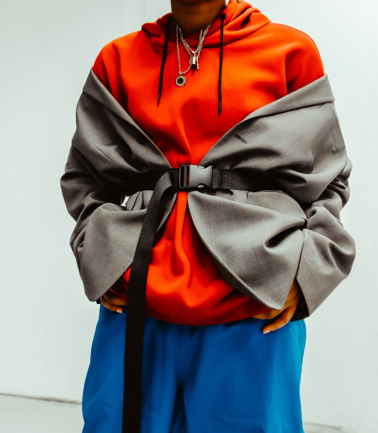

As the leaves begin to change, and the cool, crisp weather soaks in, we can’t help but feel a certain excitement for the cozy autumn season evolving before us. The transition from breezy summer tank tops to warm knit sweaters brings the opportunity to layer clothing and play around with different trends for the chillier months. Whether you’re exploring Pinterest for comfortable Zoom University outfit ideas or gathering inspiration from your favorite celebs for some work-glam attire, there are tons of seasonal and affordable aesthetics to choose from this year!
1. The Streetwear Look
This aesthetic is a blend of cool, casual, and comfortable clothing pieces that you can easily create with big flannels, hoodies, oversized t-shirts, carpenter jeans, and platform sneakers. This style is great for the “lazy but put together” vibe which is perfect for when you’re on the go!
2. Preppy Style
The ‘Preppy’ look is a classic style that never fails to succeed! You can craft this timeless aesthetic with crew necks and collared shirts, sweater vests, tennis skirts, chunky shoes, and a cute shoulder bag to top it off.
3. Business Casual Style
Business Casual is defined as professional, yet somewhat casual, and totally chic. These outfits are perfect for the office, Zoom calls from home, or even for going out to grab coffee with friends. A few staple pieces include oversized blazers, leather jackets, big button-up shirts, sleek pants, chunky sneakers, knee-high boots, and leather mules!
4. Comfort Cozy Fits
Ah, at last, the comfortable and cozy clothing that’s perfect for lazy days! This aesthetic is very versatile and can truly be designed however you’d like in order to give yourself the most relaxed and comfortable experience! One option for this style is the going-out route, by piecing together turtle-necks, sweaters, scarves, jeans, and fur boots, or, you can opt for the “leisure” look with sweatpants, slippers, and big fuzzy jackets.